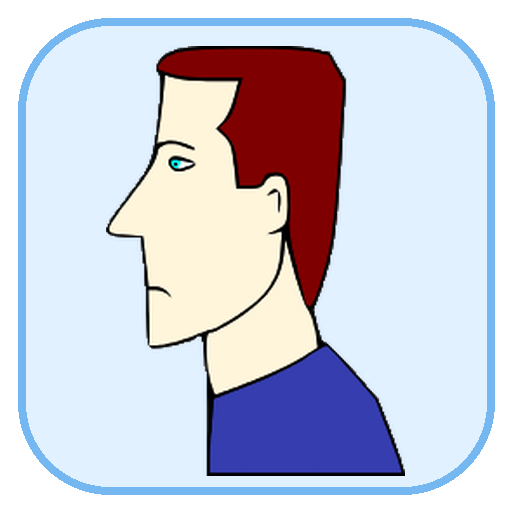
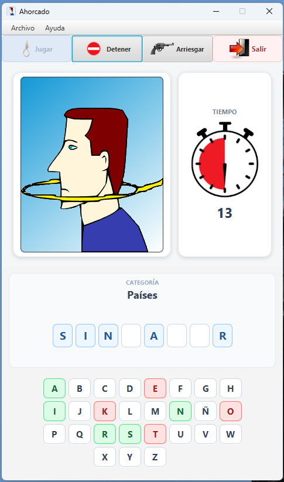
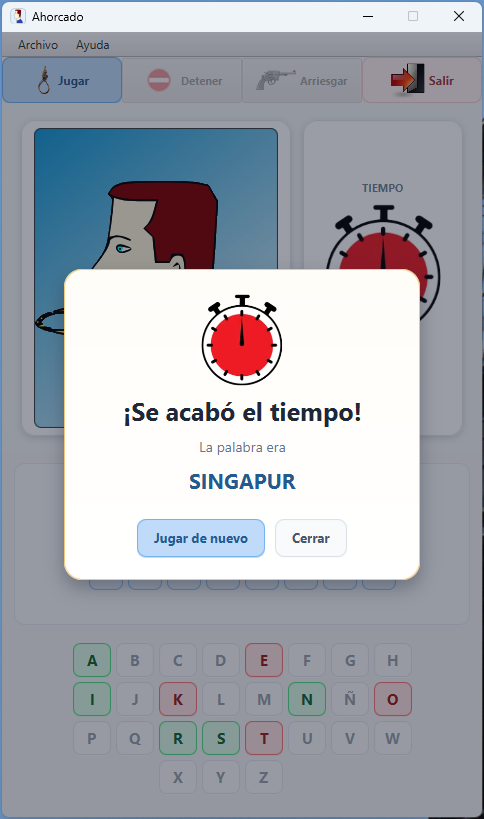

A
Seis categorías
Países, ciudades, marcas de autos, bandas de rock, equipos de fútbol y películas en una base cuidadosamente curada.

AhorcadoMás de 900 palabras y nombres, seis categorías, partidas contra reloj, sonidos y animaciones en una interfaz que se adapta automáticamente a tu pantalla. Todo funciona completamente offline.
Instaladores autocontenidos · No requiere instalar Java · Gratis
Una versión de escritorio pensada para ser clara, rápida y cómoda tanto en pantallas tradicionales como en equipos con escalado.
Países, ciudades, marcas de autos, bandas de rock, equipos de fútbol y películas en una base cuidadosamente curada.
Elegí partidas de 15, 30, 45 o 60 segundos y seguí el avance visual del tiempo.
Podés resolver letra por letra o intentar la palabra o frase completa cuando quieras.
Acentos, diéresis, eñes y caracteres especiales forman parte natural del juego.
Feedback visual y sonoro para errores, victoria, derrota y fin de tiempo.
El juego recuerda tu categoría y tiempo elegidos para la próxima partida.
La interfaz ajusta su tamaño automáticamente según el área disponible y el escalado del sistema.
Si cambiás la resolución o el escalado con el juego abierto, la ventana se reajusta automáticamente.
La base de palabras, los sonidos y todos los recursos están incluidos. No necesitás conexión para jugar.
Una interfaz compacta, clara y pensada para jugar sin distracciones.


Los instaladores incluyen su propio runtime. No necesitás instalar Java por separado.
64 bits · x86-64
Ahorcado-1.1.0.exe.Al no utilizar todavía un certificado comercial de firma, Windows puede mostrar una advertencia. Desde este repositorio oficial, elegí Más información → Ejecutar de todas formas.
Debian / Ubuntu / Mint · x86-64
ahorcado_1.1.0-1_amd64.deb.sudo apt install ./ahorcado_1.1.0-1_amd64.deb
Windows de 64 bits · x86-64
Debian, Ubuntu, Linux Mint o compatible con paquetes .deb · x86-64
La interfaz se adapta automáticamente al área útil y al escalado configurado en el sistema operativo.
No necesitás instalarlo. Cada distribución incluye su propio runtime.
Elegí tu sistema operativo y empezá a jugar.